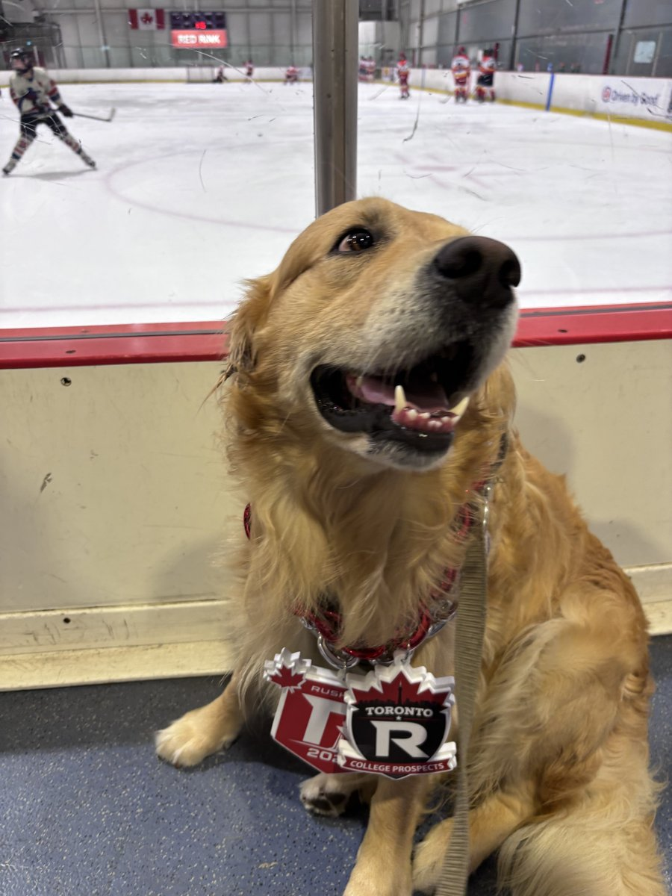
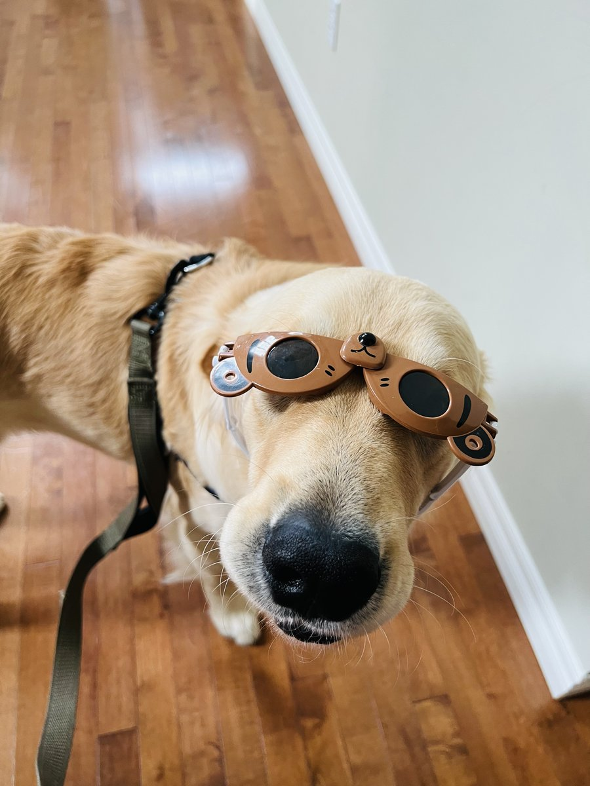
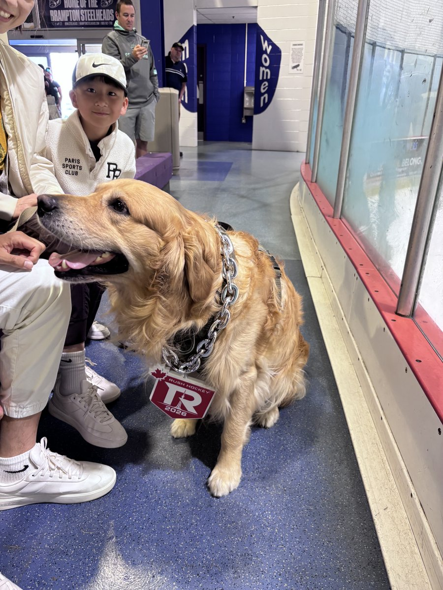
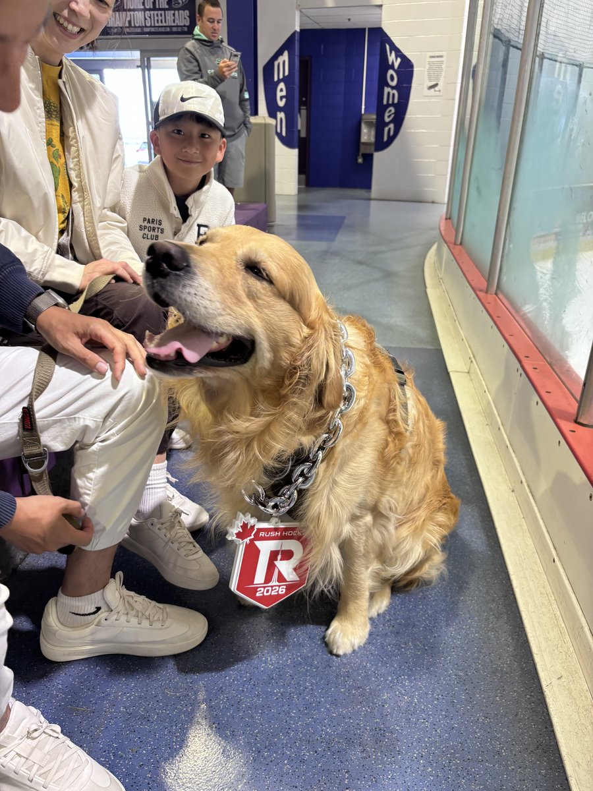
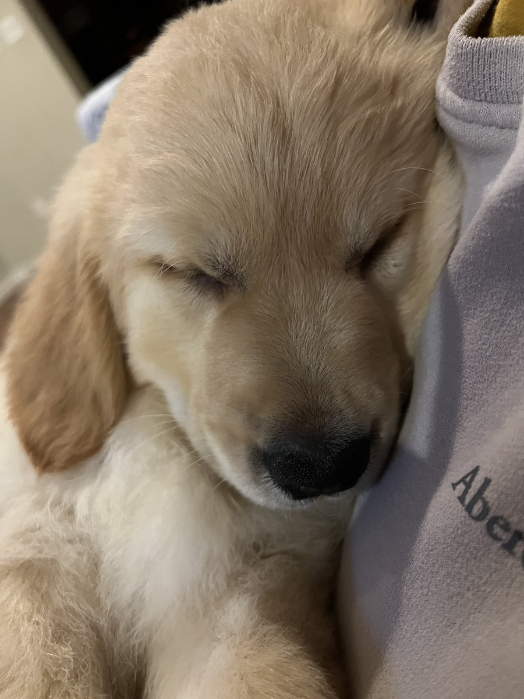
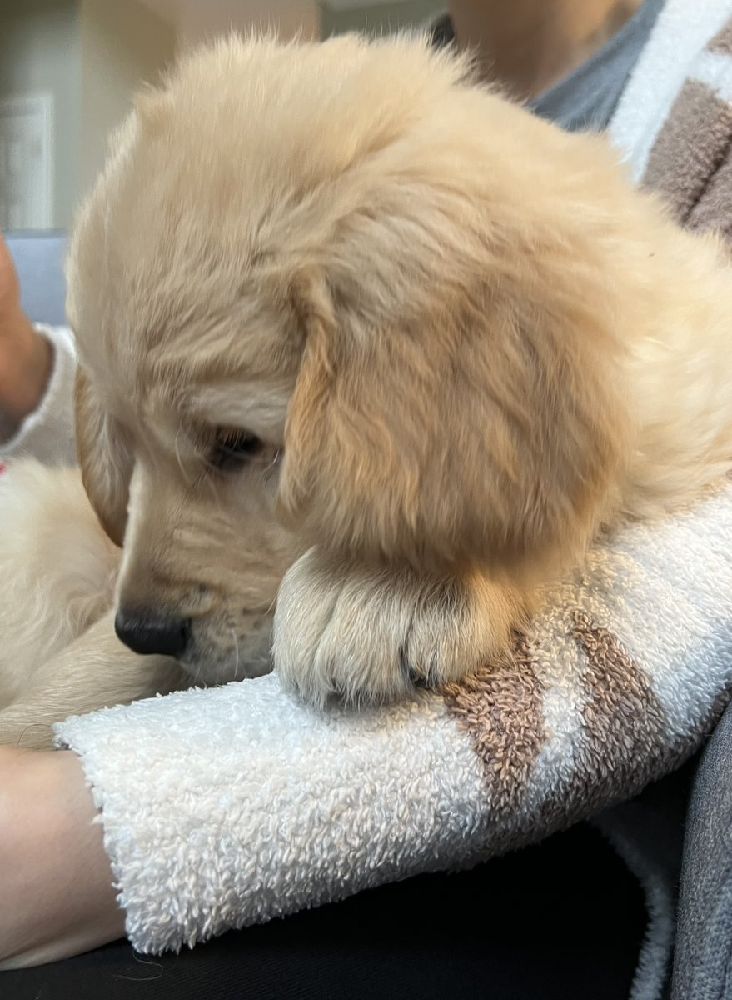
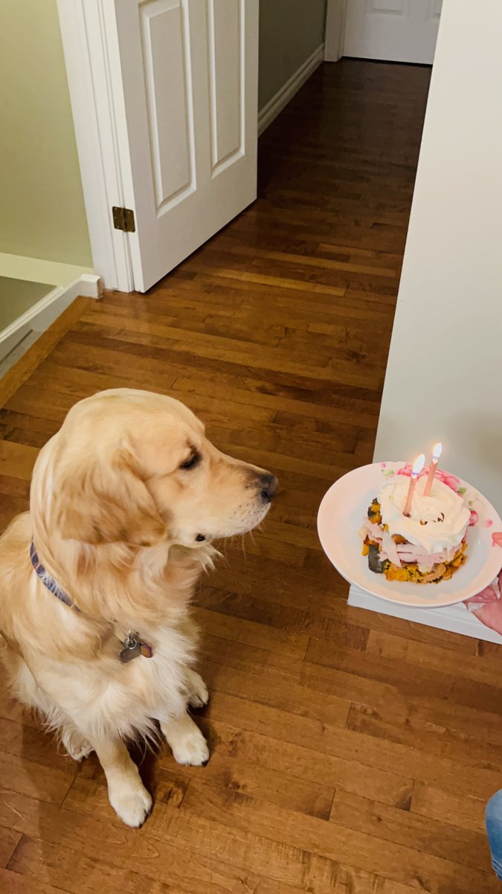

Dr. Liang (Arthur) Li
Assistant Professor, Strategy and Global Management
Haskayne School of Business · University of Calgary
Haskayne School of Business · University of Calgary
Hi, I'm Arthur — an Assistant Professor in Strategy and Global Management at the Haskayne School of Business, University of Calgary. My research centers on the managerial micro-foundations of how multinational enterprises (MNEs) manage, coordinate, and evolve their foreign subsidiaries. I'm especially interested in the decision-making processes of subsidiary general managers and the behavioral mechanisms that shape succession, control, and organizational change.
Before joining Haskayne, I was at the Ted Rogers School of Management, Toronto Metropolitan University, and before that at the Henley Business School, University of Reading. I earned my PhD in International Business from the Ivey Business School, Western University (2021).
One thing that shapes my work is the time I spent in industry before academia. I co-founded an international trading company, served as Managing Director of the China subsidiary of a Swedish MNE, and worked as an Overseas Operation Manager at Haier Group. Those years gave me a firsthand perspective on the very phenomena I now study — and I find that it makes a real difference in the classroom too.
Outside of research and teaching, I serve as an Executive Board Member of the Academy of International Business (AIB), Canada Chapter, and as a Mentor at the AIB-CIBER Doctoral Academy. I genuinely enjoy supporting the next generation of IB scholars, so please feel free to reach out if you're a doctoral student working in this space.
AI-generated audio overview of my research on MNE CEO aging (powered by NotebookLM). Open in Google Drive →
My research examines how individual managers shape organizational outcomes in multinational enterprises. I draw on behavioral theory, bounded rationality, and micro-foundational perspectives to study subsidiary control, GM succession, and MNE strategy. A second stream explores senior leadership—particularly CEO aging—and its consequences for internationalization.
I study how bounded rationality and bounded reliability shape general manager succession dynamics, decision heuristics, and nationality of successor selection in MNE foreign subsidiaries. Core work published in JIBS and IBR.
I examine how CEO aging shapes MNE internationalization portfolios, including increased selectivity toward culturally proximate and institutionally weak host countries. Published in Journal of World Business.
I develop theory using role theory, symbolic interactionism, and behavioral perspectives to advance microfoundational thinking in IB. Ongoing work under review at Global Strategy Journal and Journal of World Business.
I study how immigrant- and Indigenous-owned Canadian firms navigate global disruptions, tariff shocks, and exporting decisions, using mixed methods and Statistics Canada Research Data Centre data.
| Year | Award | Organization |
|---|---|---|
| 2026 | TRSM Outstanding Research Recognition Fund C$2,000 | Ted Rogers School of Management |
| 2025 | Best Reviewer Award | European International Business Academy |
| 2025 | Best Reviewer Award (IM Division) | Academy of Management |
| 2024–25 | TRSM Research Recognition Award | Ted Rogers School of Management |
| 2025 | "That's Interesting!" Paper Award — Finalist | Academy of International Business |
| 2024 | TRSM Outstanding Research Recognition Fund C$2,000 | Ted Rogers School of Management |
| 2024 | IB CEMS Elective Course Teaching Excellence Award | CEMS / University of Reading |
| 2023 | International Management Division Best Paper Award (OB/HRM/OT) with Hasse, V. & Rickley, M. | Academy of Management |
| 2022 | HEA Associate Fellowship (AFHEA) | Higher Education Academy |
| 2022 | D'Amore-McKim Best Dissertation Award | Academy of Management |
| 2022 | Buckley and Casson Best Dissertation Award — Finalist | Academy of International Business |
| 2022 | Best Reviewer Award | Academy of International Business |
| 2021 | Best Paper Award — Finalist (IM Division) | Academy of Management |
| 2021 | Best Reviewer Award (IM Division) | Academy of Management |
| 2020 | Best Reviewer Award (IM Division) | Academy of Management |
| 2013 | Nasdaq QMX Scholarship (Grade 1) | Gabelli School of Business / Nasdaq |
| 2013 | BiMBA Academic Excellence Award | BiMBA |
Recipient of the IB CEMS Elective Course Teaching Excellence Award (2024) and HEA Associate Fellowship (2022).
Meet Tucker — my 3.5-year-old golden retriever and chief research assistant. He attends every writing session, wears the glasses when needed, and has yet to submit a single co-author revision. Ideal collaborator.







Tucker — Golden Retriever, age 3.5 🐾